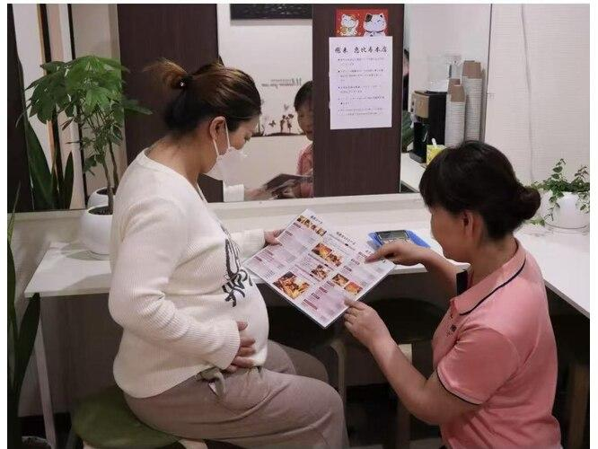

Có Nên Phun Mày Khi Đang Mang Thai?
Mang thai là giai đoạn cơ thể người phụ nữ có nhiều thay đổi về nội tiết tố, sức khỏe và làn da. Chính vì vậy, nhiều chị em dù rất muốn làm đẹp vẫn băn khoăn liệu phun mày khi mang thai có an toàn không.
Đây là câu hỏi mà ELLY PMU nhận được rất thường xuyên từ khách hàng. Bài viết này sẽ giúp bạn hiểu rõ rủi ro, thời điểm phù hợp và cách làm đẹp tạm thời an toàn hơn trong thai kỳ.
Phụ Nữ Mang Thai Có Nên Phun Mày Không?
Câu trả lời là không nên. Mặc dù phun mày là phương pháp làm đẹp ít xâm lấn, nhưng trong thời kỳ mang thai, cơ thể người mẹ nhạy cảm hơn bình thường.
Hiện nay chưa có nhiều nghiên cứu khẳng định phun mày gây ảnh hưởng trực tiếp đến thai nhi. Tuy nhiên, vì chưa thể khẳng định an toàn tuyệt đối, hầu hết chuyên gia vẫn khuyến cáo nên trì hoãn việc phun xăm cho đến sau khi sinh.
Vì Sao Không Nên Phun Mày Khi Mang Thai?
1. Cơ thể nhạy cảm hơn
Khi mang thai, nội tiết tố thay đổi, da dễ kích ứng và khả năng hồi phục có thể chậm hơn. Điều này khiến kết quả phun mày có thể không như mong muốn.
2. Khó cân nhắc việc sử dụng thuốc tê
Nhiều cơ sở sử dụng kem ủ tê để giảm cảm giác khó chịu trong quá trình thực hiện. Trong thời kỳ mang thai, việc sử dụng bất kỳ sản phẩm nào tiếp xúc với cơ thể đều nên được cân nhắc kỹ và trao đổi với bác sĩ nếu cần.
3. Nguy cơ nhiễm trùng nếu cơ sở không đảm bảo
Nếu thực hiện tại nơi không vô trùng tốt, nguy cơ nhiễm khuẩn sẽ cao hơn. Đối với phụ nữ mang thai, hạn chế các rủi ro không cần thiết luôn là lựa chọn an toàn hơn.

Nếu Đã Lỡ Phun Mày Khi Chưa Biết Có Thai?
Đây là tình huống khá nhiều người gặp phải. Nếu bạn vừa phun mày và sau đó mới phát hiện mình mang thai, đừng quá hoang mang.
Bạn nên theo dõi sức khỏe, chăm sóc vùng chân mày đúng hướng dẫn và thông báo với bác sĩ trong lần khám thai tiếp theo. Trong nhiều trường hợp, việc đã phun mày trước khi biết mang thai không đồng nghĩa sẽ gây ảnh hưởng đến em bé.
Sau Khi Sinh Bao Lâu Có Thể Phun Mày?
Nếu không cho con bú, bạn có thể cân nhắc làm đẹp sau khi cơ thể đã hồi phục ổn định. Nếu đang cho con bú, nhiều chuyên gia vẫn khuyên nên đợi đến khi kết thúc giai đoạn cho con bú hoặc tham khảo ý kiến bác sĩ trước khi thực hiện.
Thời điểm phù hợp nhất sẽ phụ thuộc vào sức khỏe, làn da, việc cho con bú và mức độ hồi phục của từng người.
Những Ai Không Nên Phun Mày?
Ngoài phụ nữ mang thai, một số trường hợp cũng nên trao đổi với bác sĩ hoặc kỹ thuật viên trước khi thực hiện:
- Người đang mắc bệnh lý cấp tính.
- Người có vùng da chân mày đang viêm nhiễm.
- Người dị ứng với thành phần trong mực hoặc sản phẩm sử dụng.
- Người đang điều trị bệnh cần thận trọng với các thủ thuật làm đẹp.
Có Thể Làm Gì Để Chân Mày Đẹp Hơn Trong Thai Kỳ?
Nếu chưa thể phun mày, bạn vẫn có thể tỉa chân mày gọn gàng, dùng chì hoặc bột kẻ mày, chải mày bằng gel trong suốt hoặc dưỡng lông mày theo hướng dẫn phù hợp.
Đây là những cách giúp gương mặt tươi tắn hơn mà không cần can thiệp bằng phun xăm trong giai đoạn nhạy cảm.
Những Hiểu Lầm Thường Gặp
Mang thai 3 tháng cuối thì phun được?
Không nên tự quyết định. Nếu có nhu cầu làm đẹp trong thai kỳ, bạn nên tham khảo ý kiến bác sĩ trước.
Phun mày có ảnh hưởng đến thai nhi không?
Hiện chưa có kết luận chắc chắn trong mọi trường hợp. Chính vì chưa đủ bằng chứng để khẳng định an toàn tuyệt đối, nhiều chuyên gia khuyến nghị trì hoãn đến sau khi sinh.
Có nên vì cưới hỏi mà phun mày khi đang mang thai?
Nếu có thể, bạn nên chọn các giải pháp trang điểm tạm thời thay vì phun xăm trong giai đoạn này.
Checklist Trước Khi Quyết Định
Đang mang thai: nên trì hoãn phun mày.
Trao đổi với bác sĩ nếu có băn khoăn về sức khỏe.
Chọn giải pháp trang điểm tạm thời trong thời gian mang thai.
Sau sinh và khi sức khỏe ổn định, hãy tư vấn trực tiếp với kỹ thuật viên trước khi thực hiện.
Câu Hỏi Thường Gặp
Bà bầu có nên phun mày không?
Không nên. ELLY PMU khuyên nên trì hoãn phun mày đến sau khi sinh để đảm bảo an toàn và kết quả ổn định hơn.
Lỡ phun mày rồi mới biết mang thai thì sao?
Bạn không nên quá hoang mang. Hãy chăm sóc vùng mày đúng hướng dẫn, theo dõi sức khỏe và thông báo với bác sĩ trong lần khám thai tiếp theo.
Sau sinh bao lâu có thể phun mày?
Nên đợi cơ thể hồi phục ổn định. Nếu đang cho con bú, bạn nên tham khảo ý kiến bác sĩ trước khi thực hiện.
Có cách nào làm mày đẹp tạm thời khi mang thai không?
Có. Bạn có thể tỉa mày, kẻ mày bằng chì hoặc bột, dùng gel chải mày và chọn phong cách trang điểm nhẹ nhàng.
Kết Luận
Làm đẹp là nhu cầu chính đáng của mọi phụ nữ, nhưng trong thời kỳ mang thai, sức khỏe của mẹ và bé luôn nên được đặt lên hàng đầu. Việc chờ thêm một thời gian để thực hiện phun mày sẽ giúp bạn yên tâm hơn và có kết quả ổn định hơn khi cơ thể đã hồi phục.